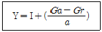
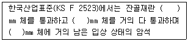

산림산업기사 (2018-03-04 기출문제)
1과목: 조림학
1. 묘목간 거리를 4m×4m로 2ha 조림하려 할 때 필요한 묘목수량은?
- 약 1,250본
- 약 2,500본
- 약 12,500본
- 약 25,000본
(정답률: 82%)

2. 한 임분을 구성하고 있는 임목 중 성숙한 임목만을 선별·벌채하는 갱신 방법은?
- 택벌작업
- 산벌작업
- 모수작업
- 중림작업
(정답률: 86%)
3. 잣나무에 대한 설명으로 옳지 않은 것은?
- 뿌리는 심근성이다.
- 잎은 5개가 모여난다.
- 천연갱신이 대체로 잘되는 편이다.
- 고산지대 및 한랭한 기후에서 잘 자란다.
(정답률: 76%)
4. 수목의 가지치기 방법으로 옳지 않은 것은?
- 늦은 겨울이나 이른 봄에 실시하는 것이 좋다.
- 가지의 지피융기선을 다치지 않게 주의해야 한다.
- 죽은 가지도 잘라주어 유합조직의 형성을 도와준다.
- 절단면이 마르면 줄기 쪽으로 다시 한 번 잘라준다.
(정답률: 81%)
5. 도태간벌에 대한 설명으로 옳지 않은 것은?
- 간벌양식으로 볼 때 하층간벌에 해당된다.
- 현재의 가장 우수한 개체를 선발하여 남기는 것이다.
- 미래목 생장에 방해되지 않는 중층목과 하층목의 대부분은 존치힌다.
- 하층식생에 일시적으로 큰 수광량을 주어 복층구조를 유도하는 데는 좋다.
(정답률: 50%)
6. 수목이 필요로 하는 무기양분 중에서 미량원소에 속하는 무기양분은?
- 인
- 철
- 황
- 칼슘
(정답률: 79%)
7. 겉씨식물에 해당되지 않은 수종은?
- 소철
- 편백
- 나한송
- 협죽도
(정답률: 75%)
8. 왜림작업에 사용되는 수종으로 묘목의 맹아력이 가장 강한 것은?
- 밤나무
- 서어나무
- 단풍나무
- 물푸레나무
(정답률: 52%)
9. 우량 묘목의 조건이 아닌 것은?
- T/R 값이 3 정도인 것
- 측아가 정아보다 우세한 것
- 발육이 왕성하고 조직이 충실한 것
- 가지와 잎이 골고루 분포하고 줄기가 굵은 것
(정답률: 85%)
10. 내음성이 가장 강한 수종은?
- Ginkgo biloba
- Thuja orientalis
- Abies holophylla
- Juniperus chinensis
(정답률: 65%)
11. 우리나라 산림대의 일반적 구분으로 옳은 것은?
- 한대림, 난대림, 열대림
- 한대림, 난대림, 아열대림
- 아한대림, 온대림, 난대림
- 한대림, 온대림, 난대림, 열대림
(정답률: 82%)
12. 숲의 기능에 대한 설명으로 옳지 않은 것은?
- 소음 방지
- 토사유출 방지
- 야생생물 보호
- 목재 생산성 향상
(정답률: 68%)
13. 자유생장을 하는 수종은?
- 잣나무
- 은행나무
- 신갈나무
- 가문비나무
(정답률: 65%)
14. 종자의 활력을 검사하는 방법이 아닌 것은?
- 절단법
- 환원법
- 부숙마찰법
- X선 분석법
(정답률: 71%)
15. 발아 촉진을 위해 침수처리를 하는 수종이 아닌 것은?
- 편백
- 피나무
- 삼나무
- 일본잎갈나무
(정답률: 56%)
16. 우리나라 산림에서 적용하는 지위지수의 정의로 옳은 것은?
- 일정한 수령을 기준으로 하여 그 때의 재적으로 결정한다.
- 일정한 수령을 기준으로 하여 그 때의 흉고직경으로 결정한다.
- 일정한 수령을 기준으로 하여 그 때의 흉고직경의 평균치로 결정한다.
- 일정한 수령을 기준으로 하여 그 때의 수고로 결정한다.
(정답률: 71%)
17. 상온의 건조한 실내에 종자를 저장할 때 발아력에 가장 심한 손상을 입는 수종은?
- 편백
- 소나무
- 신갈나무
- 일본잎갈나무
(정답률: 55%)
18. 파종상에 해가림을 해주어야 하는 수종으로만 나열한 것은?
- 잣나무, 전나무
- 곰솔, 포플러류
- 소나무, 가문비나무
- 아까시나무, 일본잎갈나무
(정답률: 73%)
19. 제벌작업을 통해 나무의 고사상태를 알고 맹아력을 감소시키기에 가장 적합한 시기는?
- 봄
- 여름
- 가을
- 겨울
(정답률: 67%)
20. 개벌작업에 대한 설명으로 옳은 것은?
- 음수 수종의 갱신에 적당하다.
- 임지가 보호되어 지력이 증진될 수 있다.
- 작업이 복잡하여 고도의 기술을 필요로 한다.
- 동일한 규격의 목재를 생산하여 경제적으로 유리하다.
(정답률: 64%)
2과목: 산림보호학
21. 미국흰불나방의 월동 형태는?
- 알
- 유충
- 성충
- 번데기
(정답률: 80%)
22. 묘목에 발생하는 수목병으로 병원체가 토양 중에서 월동하지 않는 것은?
- 뿌리혹병
- 모잘록병
- 바이러스병
- 자주빛날개무늬병
(정답률: 70%)
23. 솔잎혹파리에 대한 설명으로 옳지 않은 것은?
- 번데기로 월동한다.
- 주요 천적으로 기생벌류가 있다.
- 암컷 성충은 소나무의 침엽사이에 알을 낳는다.
- 산란 및 부화최성기에 아세타미프리드 액제를 이용한 나무주사를 실시하여 방제한다.
(정답률: 83%)
24. 리지나뿌리썩음병에 대한 설명으로 옳은 것은?
- 주로 활엽수에 발생한다.
- 담자포자에 의해 전염된다.
- 자실체는 파상땅해파리버섯이다.
- 우리나라에서만 발생하는 병이다.
(정답률: 63%)
25. 해충 발생량의 변동을 조사할 때 한 지역 내의 개체군 밀도 결정에 관여하지 않는 요인은?
- 출생률
- 사망률
- 변이율
- 이입률
(정답률: 75%)
26. 잣나무 털녹병 방제방법으로 옳지 않은 것은?
- 벌기령을 단축한다.
- 가지치기를 실시한다.
- 중간기주를 제거한다.
- 병든 나무를 제거한다.
(정답률: 71%)
27. 충영을 형성하는 해충이 아닌 것은?
- 외줄면충
- 밤나무혹벌
- 솔잎혹파리
- 소나무솜벌레
(정답률: 55%)
28. 산불을 인위적으로 적당히 활용하는 처방화입의 효용으로 옳지 않은 것은?
- 병충해를 방제할 수 있다.
- 야생 목초의 질과 양을 개량시킨다.
- 임지의 조부식층을 보존할 수 있다.
- 일부 수종의 천연하종을 가능하게 한다.
(정답률: 76%)
29. 기주식물체의 표면을 덮고 광합성 작용을 방해하여 동화작용이 저해되어 수세가 약해지는 병으로, 주로 진딧물이나 깍지벌레가 기생했던 곳에서 발생하는 수목병은?
- 잎녹병
- 털녹병
- 그을음병
- 줄기마름병
(정답률: 72%)
30. 밤바구미 방제에 사용하는 약제가 아닌 것은?
- 테부코나졸 유제
- 펜토에이트 분제
- 카보설판 수화제
- 티아클로프리드 액상수화제
(정답률: 46%)
31. 노거 수목의 지상부 외과 수술에서 공동부의 충진법으로 주로 이용되고 있는 것은?
- 목재 충진법
- 수지 충진법
- 시멘트 충진법
- 흙에 의한 충진법
(정답률: 74%)
32. 수목병 방제를 위한 외과적 요법에 대한 설명으로 옳지 않은 것은?
- 바이러스나 파이토플라스마에 의한 병에는 효과가 없다.
- 외과적 처리시기는 생장이 멈춘 늦가을에 하는 것이 좋다.
- 수술방법은 피해부위에 따라 다르며 병환부는 완전히 제거해야 한다.
- 절제부위는 살균 및 방부처리를 하여 상처부위를 통한 병원체의 2차 감염을 예방한다.
(정답률: 58%)
33. 소나무 혹병의 병원균이 중간기주의 잎으로 날아갈 때의 포자 형태는?
- 소생자
- 녹포자
- 여름포자
- 녹병정자
(정답률: 65%)
34. 바람으로 인한 피해로 가장 거리가 먼 것은?
- 수목의 형태 변형
- 토양의 양분 용탈
- 수목의 동화 작용 방해
- 수목의 과도한 증산 작용
(정답률: 68%)
35. 오리나무잎벌레에 대한 설명으로 옳지 않은 것은?
- 양성생식을 한다.
- 1년에 1회 발생한다.
- 유충과 성충이 모두 잎을 갉아 먹는다.
- 성충은 오리나무의 줄기에 알을 낳는다.
(정답률: 62%)
36. 흡즙성 해충이 아닌 것은?
- 소나무좀
- 솔껍질깍지벌레
- 버즘나무방패벌레
- 느티나무벼룩바구미
(정답률: 63%)
37. 솔나방의 발생 예찰을 위한 방법으로 가장 적합한 것은?
- 번데기의 수를 조사한다.
- 성충의 산란수를 조사한다.
- 산란기의 기상 상태를 조사한다.
- 월동 전 유충의 밀도를 조사한다.
(정답률: 73%)
38. 수목병에 대한 임업적 방제법으로 옳은 것은?
- 저항성 수종을 심는다.
- 피해 임지에 약제를 살포한다.
- 항생제를 병든 나무에 주사한다.
- 항구, 공항, 국제우편국에서 식물 검역을 실시한다.
(정답률: 71%)
39. 빗자루병에 걸린 대추나무에 나무 주사를 실시하여 치료하는 약제는?
- 베노밀
- NCS제
- 사이클로핵사마이드
- 옥시테트라사이클린
(정답률: 86%)
40. 아황산가스에 대한 저항성이 가장 약한 수종은?
- 향나무
- 벚나무
- 사철나무
- 회화나무
(정답률: 67%)
3과목: 임업경영학
41. 25년생 소나무의 재적이 2.5m3일 때 평균생장량은?
- 0.010m3
- 0.025m3
- 0.100m3
- 0.250m3
(정답률: 65%)
42. 산림수확조절을 위한 방법으로 아래 Austrian 공식에 대한 설명으로 옳지 않은 것은?

- a : 갱정기
- I : 총생장량
- Gr : 법정축적
- Ga : 현실임분의 축적
(정답률: 66%)
43. 임업경영 규모나 자산을 전년도와 비교하여 얼마나 변화하였는지 분석하는 방법은?
- 손익 분석
- 부채 분석
- 성장성 분석
- 감가상각비 분석
(정답률: 68%)
44. 산림평가 방법 중 수익방식의 장점으로 옳지 않은 것은?
- 과학적이고 논리적이다.
- 일반 경제원칙에서 대체의 원칙과 부합한다.
- 평가자의 주관이 개입될 여지가 비교적 적다.
- 안정된 시장에서는 데이터만 정확하면 대체로 가격이 정확하게 평가된다.
(정답률: 57%)
45. 우리나라의 경우 대경목으로 분류하는 흉고직경의 크기는?
- 18cm 이상
- 28cm 이상
- 30cm 이상
- 52cm 이상
(정답률: 73%)
46. n년 전의 재적을 v, 현재의 재적을 V라고 할 때, m년 동안의 정기평균생장량은 V와 v의 평균재적에 대하여 몇 %에 해당하는지를 알아보기 위한 식은?
- Meyer
- Denzin
- Pressler
- Schneider
(정답률: 78%)
47. 임가소득 중에서 임업소득이 차지하는 비율은?
- 임업소득률
- 임업의존도
- 임업조수익
- 임업소득가계충족률
(정답률: 58%)
48. 원구단면적이 0.35m2이고 말구단면적이 0.25m2인 통나무의 길이가 6m라고 할 때 스말리안식에 의한 통나무의 재적은?
- 0.8m3
- 1.5m3
- 1.8m3
- 2.1m3
(정답률: 69%)
49. 시장가역산법에 의해 임목의 가치를 평가하려고 할 때 계산 항목에 포함되지 않는 것은?
- 임목 육성에 투입된 비용
- 벌출된 원목의 예측되는 시장가격
- 벌출 운반에 소요될 것으로 예측되는 비용
- 벌출·운반 및 매각사업에서 얻어질 수 있을 것으로 예측되는 정상이윤
(정답률: 56%)
50. 측고기를 사용하여 수고를 측정할 때 주의 사항으로 옳은 것은?
- 수고 정도의 거리에서 측정한다.
- 수고보다 가까운 거리에서 측정한다.
- 나무가 서 있는 등고선보다 높은 위치에서만 측정한다.
- 나무가 서 있는 등고선보다 낮은 위치에서만 측정한다.
(정답률: 79%)
51. 수종별 벌기령이 옳지 않은 것은? (단, 공·사유림의 일반기준 벌기령을 적용)
- 소나무 : 40년
- 잣나무 : 50년
- 참나무류 : 25년
- 포플러류 : 10년
(정답률: 66%)
52. 임목생산에 들어간 비용의 원리합계는?
- 지대
- 육림비
- 노동비
- 감가상각비
(정답률: 70%)
53. 손익분기점 분석에 필요한 가정의 설명으로 옳은 것은?
- 제품을 생산하는 능률은 변함이 없다.
- 고정비는 생산량의 증감에 따라 변한다.
- 생산량과 판매량은 항상 같은 것은 아니다.
- 제품 한 단위당 변동비는 제품 생산이 늘어남에 따라 함께 증가한다.
(정답률: 65%)
54. 산림평가에 사용되는 임업이율의 성격으로 옳지 않은 것은?
- 대부이자가 아니고 자본이자이다.
- 현실이율이 아니고 평정이율이다.
- 단기이율이 아니고 장기이율이다.
- 명목적 이율이 아니고 실질적 이율이다.
(정답률: 65%)
55. 벌구식 택벌작업급에 있어서 택벌구가 일순 택벌된 다음 최초의 택벌구로 벌채가 되돌아오는데 소요되는 기간은?
- 갱신기
- 윤벌기
- 개량기
- 회귀년
(정답률: 74%)
56. 임업 및 산촌진흥 축진에 관한 법률에 의한 ‘임업인’에 해당하지 않는 것은?
- 1년 중 30일 이상 임업에 종사하는 자
- 3ha 이상 산림에서 임업을 경영하는 자
- 산림조합법 제 18조에 따른 조합원으로 임업을 경영하는 자
- 임업경영을 통한 임산물의 연간 판매액이 120만원 이상인 자
(정답률: 70%)
57. 10만원으로 임지를 구입하고 5년이 경과했을 때 임지비용가는? (단, 이율은 5%)
- 약 7,830원
- 약 63,800원
- 약 87,500원
- 약 127,630원
(정답률: 60%)
58. 법정림의 4가지 요건에 해당되지 않는 것은?
- 법정축적
- 법정수확
- 법정생장량
- 법정영급분배
(정답률: 62%)
59. 지황조사 항목이 아닌 것은?
- 방위
- 지리
- 지위
- 소밀도
(정답률: 64%)
60. 임업노동의 특성에 대한 설명으로 옳지 않은 것은?
- 단위면적당 노동량이 많고 노동강도가 강하다.
- 산림경영 규모가 작아서 기계의 연속 가동일수가 짧다.
- 작업장소인 산림까지의 이동시간이 길어서 실제 작업시간은 짧다.
- 농업 노동력을 벌채·운반노동에 이용하려면 별도의 훈련이 필요하다.
(정답률: 72%)
4과목: 산림공학
61. 설계속도가 30km/시간, 마찰계수가 0.15, 노면의 횡단물매가 0.15인 경우 임도 노선의 최소곡선반지름은?
- 20.6m
- 21.6m
- 22.6m
- 23.6m
(정답률: 54%)
62. 평판측량의 장점으로 옳지 않은 것은?
- 오측을 쉽게 발견할 수 있다.
- 내업이 다른 측량보다 적은 편이다.
- 기상에 따른 영향을 거의 받지 않는다.
- 현장에서 제도하므로 정확하게 표시할 수 있다.
(정답률: 77%)
63. 척박한 황폐지의 녹화수종으로 가장 부적합한 것은?
- 소나무
- 싸리류
- 오리나무
- 서어나무
(정답률: 60%)
64. 산지 침식의 주요 요인이 아닌 것은?
- 지리적 요인
- 기상적 요인
- 지형적 요인
- 지질적 요인
(정답률: 59%)
65. 트랙터집재와 비교한 가선집재의 장점으로 옳은 것은?
- 작업이 단순하다.
- 작업생산성이 높다.
- 장비구입비가 저렴하다.
- 잔존 임분에 피해가 적다.
(정답률: 61%)
66. 나무운반미끄럼틀을 이용한 집재 시 스위치백(switch back)을 설치하는 곳은?
- 암석지
- 훼손지
- 급경사지
- 급한 굴곡지
(정답률: 54%)
67. 해안지역의 모래언덕에 조림하는 수종으로 가장 부적합한 것은?
- 곰솔, 소나무, 아까시나무 등의 수종
- 양분과 수분에 대한 요구도가 높은 수종
- 온도의 변화와 강한 바람에 잘 견디는 수종
- 왕성한 낙엽, 낙지 등으로 지력을 증진시키는 수종
(정답률: 85%)
68. 임도 시공에서 흙쌓기 공사에 대한 설명으로 옳지 않은 것은?
- 시공면의 침하를 고려하여 더쌓기를 실시한다.
- 흙쌓는 두께 30~50cm마다 흙다지기를 해야한다.
- 흙쌓기 비탈면은 줄떼다지기 등의 보호공사를 실시해야 한다.
- 더쌓기의 두께는 기준높이의 20~50%를 표준으로 한다.
(정답률: 70%)
69. 견치돌에 대한 설명으로 옳지 않은 것은?
- 마름돌과 같이 고가의 재료이다.
- 특별한 규격으로 다듬은 석재이다.
- 사방댐이나 옹벽에는 사용하지 않는다.
- 견고를 요하는 돌쌓기 공사에 사용한다.
(정답률: 81%)
70. 1ha 당 적정 임도밀도가 20m일 때 집재거리는?
- 62.5m
- 125.0m
- 187.5m
- 250.0m
(정답률: 50%)
71. 인공 수로에서 윤변이 30m이고, 유적이 15m일 때 경심은?
- 0.5m
- 1.0m
- 1.5m
- 2.0m
(정답률: 55%)
72. 임도 노선의 실제 측량 시에 중심말뚝의 측점은 몇 m 간격마다 설치하는가?
- 10m
- 20m
- 30m
- 40m
(정답률: 67%)
73. 조공식 파종공법에 대한 설명으로 옳지 않은 것은?
- 사용되는 비료는 속효성 비료보다 지효성 비료가 좋다.
- 파종구에 토양과 비료를 잘 혼합한 후 체로 쳐서 사용한다.
- 파종 후에는 잘 밟아주고 다시 약간의 흙덮기를 하여 준다.
- 비탈면에 일정간격으로 수평계단을 설치하고 계단 안에 파종구를 설치한다.
(정답률: 69%)
74. 산사태나 산붕의 위험성이 가장 높은 토질은?
- 점토
- 사질토
- 미사토
- 사질양토
(정답률: 57%)
75. 일반지형에서 설계속도가 20km/시간인 경우 종단기울기는?
- 7% 이하
- 9% 이하
- 10% 이하
- 14% 이하
(정답률: 67%)
76. 임목수확작업 시 벌도, 가지치기, 토막내기, 조재목 마름질에 가장 적합한 기계는?
- 포워더(forwarder)
- 하베스터(harvester)
- 프로세서(processor)
- 펠러번처(feller buncher)
(정답률: 62%)
77. 체인톱에 대한 설명으로 옳지 않은 것은?
- 체인톱 몸통의 수명은 약 1500시간이다.
- 휘발유와 체인톱 전용오일의 혼합비는 40:1이다.
- 체인톱 날 처짐은 상관없으나 볼트, 너트 풀림 상태는 항상 확인하여야 한다.
- 우리나라에서 주로 사용되는 체인톱 기종은 배기량 30~70cc 정도의 소형 및 중형이다.
(정답률: 75%)
78. 산림의 단위 면적당 임도연장으로 나타내는 양적 지표는?
- 임도밀도
- 산림개발도
- 임도효율요인
- 평균집재거리
(정답률: 71%)
79. 잔골재 크기에 대한 구분 방법으로 다음 ( ) 안을 순서대로 올바르게 나열한 것은?

- 10, 5, 2.5
- 5, 2.5, 0.08
- 10, 5, 0.08
- 10, 2.5, 0.08
(정답률: 58%)
80. 임도 설계서에서 예정공정표 작성 시 점검하는 사항으로 가장 거리가 먼 것은?
- 작업의 난이도
- 계절적인 조건
- 시방서 준수여부
- 기술인력 투입정도
(정답률: 52%)